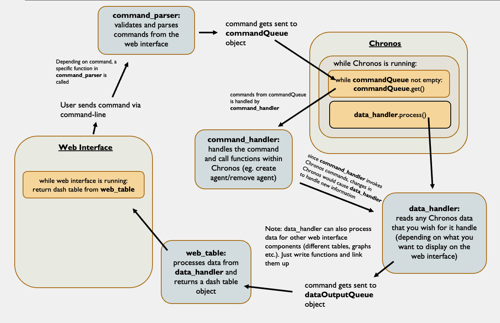
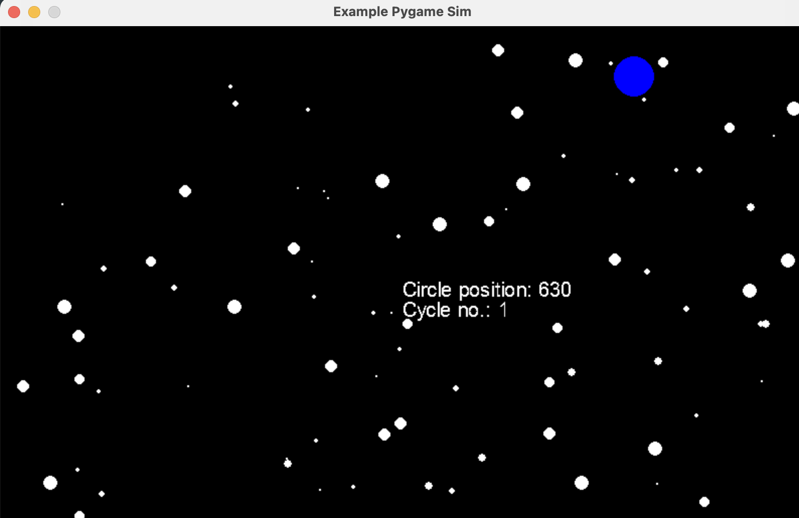

Core Modules for Development¶
In this section, a detailed description of the different core modules built for connecting Chronos to the web interface is elaborated upon. These modules are simply “parent classes” which contains the essential attributes and methods that are likely used in all Chronos instances. In each Chronos instance, it is likely that you will have to program your own “child classes” that inherits from them to incorporate additional methods specific to your Chronos instance.
After understanding the core modules here, you should be able to build your own child classes to suit the needs of your Chronos instance.
Chronos-Web Interface¶
There are 4 main modules that should be understood before any Chronos-web development. The 4 modules which are contained in the folder core_web are:
command_parsercommand_handlerdata_handlerweb_table
The first 3 modules (command_parser, command_handler and data_handler) are involved in the transfer of information between the web interface (through the command line) and Chronos. These modules are crucial for the linkage between the web interface and Chronos and will likely be used for inheritance into child classes. More on each of these modules will be detailed below.
The 4th module (web_table) is an example of a class that can be created to display data from Chronos. In this particular example, web_table takes in certain agent-based data outputs from Chronos, processes them, before displaying them as a Dash table on the web interface. It is up to the developer to define their own class for displaying data (eg. you may wish to create a class for displaying data in a graph, or a bar chart - all of these components can be done with Dash apps). This module serves as a core example class that Chronos developers can use as a reference to understand the linkages between the modules.
Before navigating to the section describing each module, their uses and how you can build upon it, it would be helpful to briefly study the flow chart below to get a rough idea of how the modules interact with one another alongside Chronos and the web interface.

Example of a pygame visualisation from Chronos.
Core_web Modules¶
command_parser
The command_parser handlers user-input commands by valididating them before parsing them and sending the commands to Chronos via a Queue() object (commandQueue). Functions for validating and parsing commands are written in the command_parser. The command_parser is called in a callback function that deals with the command line. For example, a method within command_parser may look like:
def create_delete_agents(self, input): # Takes in input (commands sent by the user)
# Note that the set rule for using the create agent function is:
# create [agent_group] [agent_id]
keyList = ['command', 'agent-group', 'id']
inputList = input.split()
if len(inputList) != 3: # Since commands to create agents has to have 3 arguments, return None if it does not
return None
inputDict = dict()
for i in range(len(keyList)):
inputDict[keyList[i]] = inputList[i] # Create a dictionary with keys from keyList and values from the command line input
self.commandQueue.put(inputDict) # Put the dictionary into commandQueue - this will be read by the command_handler in Chronos
return self.default_return # This renders a text that informs the user that their command was sent successfully - this is needed in returning out of the callback function
Note that if the command is valid, inputDict which contains info about the command (you may use your own data structure for storing info on commands) will be put into commandQueue, which will be sent to Chronos.
The command_parser works hand in hand with the callback function on approximately Line 541 of app.py that has a function defined as send_commands. The general idea behind this callback function is outlined below with comments:
# Initialise the console_commands container by using a command_parser
cc_container = command_parser(commandQueue)
# Call back that obtains commands from the interface command line and parses them to be processed in Chronos
@app.callback(
Output('hidden-div-dialog-4', 'children'), # Text beneath the command line
Output('hidden-div-dialog-4', 'style'), # Style of the text beneath the command line (to either render invisible or visible)
Output('command-line-input', 'value'), # Command-line - to erase it once a command has been sent
State('command-line-input', 'value'), # Reads input from the command line (when the button is pressed)
Input('button-3', 'n_clicks') # Button for sending commands - can also use the "enter" key due to the custom js script
)
def send_commands(input, n_clicks):
# Default text/style of text beneath the command line
sendCommandText = html.P('Your command has been sent!')
sendCommandStyle = dict(display='none') # display='none' renders an invisible text
# Visibly does not return any text (because it is invisible) if the button is not clicked
if n_clicks is None: # n_clicks = None upon initialisation of the web interface
n_clicks = 0 # We simply convert it to zero so that we can make integer comparisons when checking buttonIsPressed
return sendCommandText, sendCommandStyle, ''
buttonIsPressed = n_clicks > sendCommandCount # Boolean for checking if the button is pressed
## Hash table mapping the commands and their functions - the first keyword of the command represents which method within command_parser should be called
commandHash = {
'create': cc_container.create_delete_agents,
'delete': cc_container.create_delete_agents,
}
if buttonIsPressed:
sendCommandStyle = {'color': 'black'} # Change the style of text beneath the command line - you need to render a text for sure when a command is sent
if input == '': # For empty sends
sendCommandText = html.P('You have not inserted any commands!')
return sendCommandText, sendCommandStyle, ''
if (input.split()[0] in commandHash.keys()): # Checks if the first keyword is within commandHash
# Passes the first keyword of the command into the function
# If the command is valid, an successful text/style render will be returned
callbackOutput = commandHash[input.split()[0]](input)
if callbackOutput is not None: # callbackOutput will be None if the input is invalid
return callbackOutput
# If its not a valid command/the first keyword is not in commandHash
sendCommandText = html.P('\'' + input + '\' ' + 'is not a valid command!')
return sendCommandText, sendCommandStyle, ''
You can clearly see that if command_parser is successful in validating the command, the appropriate text/style will be returned (to the output defined by the callback decorator) to inform the user on the success. Otherwise if an incorrect command was entered, the user will also be informed about its failure.
How you may use this module:
With the flexibility of command_parser, you are free to define your own commands, implement your own rules/logic on how to validate these commands, and define how you wish to parse/package them (do you want them in a dict/list/certain format?) before sending them to Chronos for processing. Do refer to the example methods already made for creating/removing agents.
command_handler
In each iteration of the main while loop within Chronos, the commandQueue object should be checked for new info to alert Chronos regarding any new commands being sent by the web interface. This is then passed into the command_handler, which processes the parsed commands and decides which Chronos-based commands to call. For instance, if it receives a command to create or delete an agent, it will call the agent-based create/delete functions. This is possible because the command_handler can be made to be connected with the Chronos agents due to the definition below:
class command_handler():
def __init__(self, world):
# Attached to world to allow command_handler to work with Chronos agents
self.world = world
# Attach to controllers from world
self.controllers = self.world.controllers
# Define agent groups
self.agent_groups = {}
# Appends agent groups from controllers into self.agent_groups
for controller in self.controllers:
self.agent_groups[controller.agent_group.name] = controller.agent_group
The connection of command_handler with Chronos is crucial to allow Chronos based functions to be called depending on the command received from the web interface. To call a certain Chronos based function, a generalised function that runs during each instance of the Chronos while loop is defined as follows:
def handle_all(self, command):
# This method is called each time in the main simulation loop to check the commandQueue for commands
if command['command'] == 'create':
self.__handle_create_agent(command['agent-group'], command['id'])
elif command['command'] == 'delete':
self.__handle_delete_agent(command['agent-group'], command['id'])
elif command['command'] == 'list':
self.__list_agent_groups()
return
This function checks for the different possible commands being sent by the web interface and proceeds to call internal methods for handling each of the commands. For instance, if the command received was to “create”, self.__handle_create_agent() would be called, and the appropriate arguments will be passed into the function. self.__handle_create_agent() looks like:
def __handle_create_agent(self, agent_group, id):
# Used to handle create agent methods in agent groups
if agent_group not in self.agent_groups.keys(): # Checks if the agent_group sent by the web interface is a valid agent_group
print('Agent group not found!') # Prints this to the console if its not
else:
self.agent_groups[agent_group].create_agent(id) # Otherwise call the agent group's "create_agent" function
return
As you can see, there is a final step of validation on the side of Chronos that can only be done by the command_handler which is attached to Chronos. This is because the web interface do not yet have any information regarding the state of Chronos. In short, while command_parser seeks to validate the syntax and existence of commands, command_handler also seeks validate whether a certain command can be allowed to execute (for instance, command_parser may validate a create agent command, but command_handler may not validate it due to the non-existent agent group that the command is trying to create an agent from).
How you may use this module:
You are free to write internal command_handler functions that handles the different kinds of commands you may receive from the commandQueue, and implement logic to call the appropriate Chronos-based functions as you wish.
data_handler
The state of the Chronos instance will change:
as Chronos is allowed to run naturally (via each call to
world.step()), or…when a command sent by the user from the web interface initiates a certain Chronos function to be called during the Chronos run.
command_parser and command_handler has already dealt with the validity of commands, as well as the determining the appropriate Chronos function to be called. data_handler now deals with how the required information regarding the new state of Chronos may passed back to the web interface to be displayed neatly in tables/graphs/charts. data_handler is also attached to Chronos in a similar way to command_handler, as it will be extracting information on the new state of Chronos to be sent back to the web interface via the dataOutputQueue object.
An example of the how data_handler might handle data is shown below:
def process_agent_data(self):
# Processes data in the form of data and columns to be displayed on the table of the web interface
agent_id_list = []
agent_group_list = []
for agent_group in list(self.agent_groups.values()):
for agent_id in agent_group.agent_ids:
agent_id_list.append(agent_id)
agent_group_list.append(agent_group.name)
df = pd.DataFrame({
"Agent ID": agent_id_list,
"Agent Group": agent_group_list,
})
return df
Since the web interface contains a table that serves to display agent-based data, the data_handlers obtains data about current active agents and creates a pandas dataframe from it. It returns the dataframe which will be put into dataOutputQueue as follows:
# Handles Chronos info before passing it to the web interface (via dataQueueOutput)
agent_data_hand = data_handler()
df = agent_data_hand.process_agent_data()
dataQueueOutput.put(df)
The data in dataOutputQueue is processed and used for display purposes by a final receiving module on the web interface side, which will be discussed next.
How you may use this module:
You are free to extract data from Chronos as you wish, parse and package them nicely, before putting them into dataQueueOutput.
web_table
This module is not necessarily a core module, but for purposes of demonstration it will also be included as a reference. web_table is an example of a module that takes in the output from dataQueueOutput and does some final processing before displaying them as a Dash table (in this case).
On the web interface side, depending on where you wish for this your Chronos data to be displayed, you could work with the dcc.Interval element of Dash to constantly call a function that reads in output from dataQueueOutput. For instance, since in this case, the data is used for rendering a dash table, a callback function that deals with the dash table would look like:
# Initialise the web_table object
d_table = web_table()
# Call back that updates the table according to web_table
@app.callback(
Output("data-table", "data"), # Table data
Output("data-table", "columns"), # Table columns
Input("table-update-interval", 'n_intervals') # dcc.Interval element (configured to read and update every 1 second)
)
def update_data_table(n):
while not dataQueueOutput.empty():
d_table.update_df_from_Chronos(dataQueueOutput) # Updates the table if dataQueueOutput contains something
return d_table.data, d_table.columns
How you may use this module:
Feel free to define your own class for rendering and outputting a certain graphical element on the web interface. It could be a graph, chart, or even more tables to showcase different kinds of data.
Note that for purposes of simplicity, separate data_handler objects should be used for outputting separate components. For instance, if you would like to render two independent tables, you should have two data_handler objects for each of them, as well as two Queue() objects that will be independently read by each of their callback functions.
Additional info¶
There is a file - command_list.json that exists in the core_web directory. The contents of the file is read by app.py to render the command list section of the web interface. Feel free to add whatever command you wish to add into this file for it to be displayed on the web interface too.
GUI (Pygame)¶
A base parent class for the Pygame visualisation of Chronos has been built to allow for a more standardised and consistent approach to building Pygame visualisations. The base parent class can be located as gui.py in the directory core_gui. The pygame_streamer object is also defined in this folder.
Core_gui Modules¶
The core gui class contains basic methods such as:
initialising pygame
setting the pygame window dimensions
importing images into the pygame environment
setting colors/fonts
drawing the pygame window (this is the main method for rendering the pygame window continuously, which will be called during each step of the main while loop of Chronos)
The current core gui class is configured to render an example pygame environment with the help of the movingcircle object for the sake of demonstration and testing purposes only, and is not actually connected to Chronos. However, it may serve as a useful reference as to how you may want to structure your pygame environment. Most of the methods within the core gui class can be inheritted, and if need be, overwritten by the child gui class.

Pygame visualisation from the core gui module.
How you may use this module:
You are free to define your own main gui class as well as classes for independent components within your pygame environment. For instance, you may have a main gui_controller class that inherits from the core gui class to manage most of the pygame-related functions, while also having different classes for the different agent groups with Chronos, each with their own independent attributes. In most cases, information from Chronos is required to update the pygame window - consider setting the required component of Chronos (such as world or a certain agent group) as an attribute of your main gui_controller class during initialisation. That way, you will be able to access any Chronos related attributes.
In any case, this tutorial on Pygame has proved to be helpful in the development of this core module. The main concepts you should be familiar with is the typical structure of a pygame environment (how to set up the loop for the pygame environment), how to draw and specify positions of pygame components, and rendering text.
Additional info¶
The two additional files contained within core_gui - colorlist.json and pygamefonts.txt contains some colors (for your pygame components, background etc.) as well as some pygame fonts (for rendering text) which can be used in your environment.
The
colorlist.jsonfile was derived from the librarycolordict. By default, the coreguimodule has setself.colors = colordict.ColorDict(), which results inself.colorsbeing a dict with color names as keys and rgb values as the corresponding values. When specifying colors for the pygame environment, you may obtain any colors (contained withincolorlist.json), for example:
white = self.colors['white']
black = self.colors['black']
Of course, you are more than welcome to overwritted self.colors with a dictionary of only some specific colors that you will use.
The
pygamefonts.txtfile contains some pygame allowed fonts for rendering. Feel free to set your own fonts to be used inself.fontsas a dictionary. For instance, if your pygame environment makes use of two fonts - each for rendering their own texts, you may define your fonts as:
self.fonts = {
'vehicle_font': pygame.font.SysFont('arial', 20),
'pedestrian_font': pygame.font.SysFont('helveticaneue', 15)
}
Apart from the core web interface branch (chronosweb_core), feel free to check out the branch named chronosweb_gt for a more complex example on how it inherits the core gui class to its own child gui class for that specific Chronos instance.
How to Structure the Main Chronos File¶
When all the core web and core gui components are integrated together, the main.py of Chronos should be structured as follows:
# This function is called as a subprocess in app.py
def main(dataQueueOutput, consoleQueue, commandQueue):
### ----- Main Chronos Code ----- ###
# Defining world
...
# Defining controllers, agents, logic
...
# Attaching controllers to world, agents/logic to controllers
...
### ----- Pygame Setting Up Code ----- ###
# Defining pygame GUI object
gui = GUI(...)
# Setting up the pygame window
gui.set_window(...)
### ----- Initialising some objects ----- ###
# Initialising pygame streamer
streamer = PygameStreamer(...)
# Initialising command_handler
com_hand = command_handler(...)
# Initialising data_handler
data_hand = data_handler(...)
### ----- Initialise subprocess for checking Chronos stop ----- ###
shared_val = Value(...)
stop_stream_process = Process(...) # This process changes shared_val to 1 when stop is initiated
### ----- Main Chronos Loop ----- ###
while running:
with contextlib.redirect_stdout(io.StringIO()) as output: # This is needed to read console outputs
# Break out of loop if stop/refresh button is pressed
if shared_val.value == 1.0:
running = False
break
# Get commands from the command queue if available
while not commandQueue.empty():
command = commandQueue.get()
com_hand.handle_all(command) # Handles command and decides which Chronos based function to call
# Update Chronos instance by going into the next step
world.step()
# Update the gui window for each step
gui.draw_window()
# Feed new frames into pygame streamer
image = streamer.pygame_to_image(gui.window)
streamer.image_queue.put(image)
# Handle Chronos info
data = data_hand.process_data()
dataQueueOutput.put(data)
# Feed console outputs from Chronos to be displayed on the web interface
if len(output.getvalue()) != 0:
consoleQueue.put(output.getvalue())
consoleQueue.put('End of Chronos Simulation') # This line is called when broken out of the main while loop.
### ----- Termination of subprocesses ----- ###
streamer.terminate()
stop_stream_process.terminate()
# Safely quits pygame
pygame.quit()
# To allow the web interface ot safely stop the Chronos process from app.py
consoleQueue.put('stop chronos')
Do try to follow this general structure for all Chronos main.py instances!